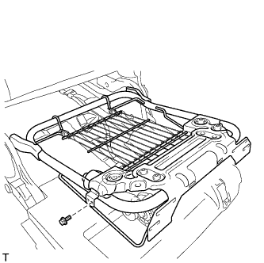

ЗАДНЕЕ СИДЕНЬЕ № 2 В СБОРЕ (левое сиденье с электроприводом) > РАЗБОРКА |
| 1. СНИМИТЕ КОЛПАЧОК |
 |
Снимите 2 колпачка.
| 2. СНИМИТЕ НИЖНЮЮ НАКЛАДКУ ПЕТЛИ ПОДУШКИ ЛЕВОГО ЗАДНЕГО СИДЕНЬЯ |
 |
Выверните 2 винта.
Отцепите 3 захвата и снимите крышку.
| 3. СНИМИТЕ НИЖНЮЮ НАКЛАДКУ ПЕТЛИ ПОДУШКИ ПРАВОГО ЗАДНЕГО СИДЕНЬЯ |
 |
Выверните 2 винта.
| *1 | Направляющее |
Освободите 2 захвата и направляющую и снимите обивку.
| 4. СНИМИТЕ ЗАМОК РЕМНЯ БЕЗОПАСНОСТИ ЛЕВОГО ЗАДНЕГО СИДЕНЬЯ № 2 В СБОРЕ |
 |
Выверните болт с помощью торцевого ключа "TORX" T45 и снимите замок ремня безопасности в сборе.
| 5. СНИМИТЕ ЭБУ СКЛАДЫВАНИЯ СИДЕНЬЯ |
 |
Отсоедините 2 разъема.
Отверните 2 гайки и снимите ЭБУ.
| 6. СНИМИТЕ МОЛДИНГ ПОДУШКИ ЗАДНЕГО СИДЕНЬЯ № 1 |
 |
С помощью съемника фиксаторов освободите 2 фиксатора.
Освободите 2 захвата и 4 направляющих, а затем снимите молдинг.
| *1 | Направляющее |
| 7. СНИМИТЕ ОБИВКУ ПОДУШКИ СИДЕНЬЯ ВМЕСТЕ С ПОДУШКОЙ |
 |
Откройте 2 застежки.
| *1 | Фиксатор |
 |
Освободите 2 фиксатора и откройте внутреннюю часть обивки подушки сиденья.
 |
Освободите 2 крепления и снимите обивку подушки сиденья вместе с подушкой.
| *1 | Крюк |
| 8. СНИМИТЕ ОБИВКУ ПОДУШКИ ЛЕВОГО СИДЕНЬЯ № 3 В СБОРЕ |
Освободите крепление.
| *1 | Фиксатор |
Снимите витковые пружины и обивку подушки сиденья.
| 9. СНИМИТЕ ВНУТРЕННЕЕ КРАЕВОЕ УКРЕПЛЕНИЕ ПОДУШКИ ЛЕВОГО ЗАДНЕГО СИДЕНЬЯ |
 |
Срежьте закрепки и снимите защиту с подушки сиденья.
| *1 | Стяжка |
| 10. СНИМИТЕ МОЛДИНГ ПОДУШКИ ЗАДНЕГО СИДЕНЬЯ № 2 |
 |
Выверните 2 винта.
Освободите 2 захвата и снимите молдинг.
| 11. СНИМИТЕ НАКЛАДКУ НОЖЕК ЛЕВОГО ЗАДНЕГО СИДЕНЬЯ № 3 |
 |
Отцепите 2 захвата и снимите обивку.
| 12. СНИМИТЕ ВНУТРЕННЮЮ НАКЛАДКУ ПЕТЛИ ПОДУШКИ ЛЕВОГО ЗАДНЕГО СИДЕНЬЯ |
 |
Выверните винт и снимите фиксатор.
| *1 | Направляющее |
Отсоедините направляющую и снимите щиток.
| 13. СНИМИТЕ ВНУТРЕННЮЮ НАКЛАДКУ ПЕТЛИ ПОДУШКИ ПРАВОГО ЗАДНЕГО СИДЕНЬЯ |
Выверните винт и снимите фиксатор.
| *1 | Направляющее |
Отсоедините направляющую и снимите щиток.
| 14. СНИМИТЕ ЛЕВУЮ НИЖНЮЮ НАПРАВЛЯЮЩУЮ СИДЕНЬЯ |
Выверните 2 болта и снимите направляющую сиденья.
| 15. СНИМИТЕ ПАНЕЛЬ СПИНКИ ЛЕВОГО ЗАДНЕГО СИДЕНЬЯ В СБОРЕ |
Освободите 7 фиксаторов и снимите панель.
| 16. СНИМИТЕ КРЕПЛЕНИЕ ЗАМКА СПИНКИ ЗАДНЕГО СИДЕНЬЯ |
Снимите крепление замка.
| 17. СНИМИТЕ ДЕРЖАТЕЛЬ ОБИВКИ ЗАДНЕГО СИДЕНЬЯ № 1 |
 |
Выверните 2 винта, отсоедините направляющую и снимите держатель.
| *1 | Направляющая |
| 18. СНИМИТЕ ОБИВКУ СПИНКИ СИДЕНЬЯ ВМЕСТЕ С ПОДУШКОЙ |
Отсоедините крепления.
| *1 | Крюк |
 |
Освободите 8 фиксаторов и снимите обивку спинки сиденья с подушкой.
| 19. СНИМИТЕ ОБИВКУ СПИНКИ ЛЕВОГО СИДЕНЬЯ № 3 В СБОРЕ |
Снимите витковые пружины и обивку спинки сиденья.
| 20. СНИМИТЕ КРАЕВОЕ УКРЕПЛЕНИЕ СПИНКИ ЗАДНЕГО СИДЕНЬЯ № 2 |
 |
Срежьте закрепки и снимите краевое укрепление с подушки спинки сиденья.
| *1 | Стяжка |
| 21. СНИМИТЕ ОБИВКУ СПИНКИ СИДЕНЬЯ № 2 |
Отцепите 2 захвата и снимите обивку.
| 22. СНИМИТЕ КРЫШКУ ПОДГОЛОВНИКА ЗАДНЕГО СИДЕНЬЯ |
 |
Выверните 2 винта.
| *1 | Направляющее |
Освободите 2 захвата и направляющую и снимите обивку.
| 23. СНИМИТЕ ТРОС УПРАВЛЕНИЯ ПОДГОЛОВНИКОМ ЗАДНЕГО СИДЕНЬЯ |
Снимите 2 зажима.
| *1 | Наконечник троса |
| *2 | Хомут |
Скрутите 2 конца троса в направлении, показанном стрелкой, и снимите трос.
| 24. СНИМИТЕ ПОДГОЛОВНИК ЗАДНЕГО СИДЕНЬЯ В СБОРЕ |
Отверните 3 гайки и снимите подголовник.
| 25. СНИМИТЕ КРАЕВОЕ УКРЕПЛЕНИЕ СПИНКИ ЗАДНЕГО СИДЕНЬЯ |
Освободите 4 захвата и снимите 2 защиты.
| 26. СНИМИТЕ ВНУТРЕННЮЮ ОТКИДНУЮ КРЫШКУ ЛЕВОГО ЗАДНЕГО СИДЕНЬЯ № 3 |
 |
Отцепите 4 захвата и снимите обивку.
| 27. СНИМИТЕ НАРУЖНУЮ ОТКИДНУЮ КРЫШКУ ЛЕВОГО ЗАДНЕГО СИДЕНЬЯ № 3 |
Выверните винт.
| *1 | Направляющее |
Освободите направляющую и 2 захвата и снимите крышку.
| 28. СНИМИТЕ КАРКАС ПОДУШКИ ЛЕВОГО СИДЕНЬЯ № 2 В СБОРЕ |
|  |
Выверните болт и отсоедините жгут проводов.
С помощью отвертки освободите рычаг замка, как показано на рисунке.
 |
Вытяните раму подушки сиденья.
С помощью торцевого ключа "TORX" T40 выверните 4 болта "TORX" и снимите раму подушки сиденья.
| 29. СНИМИТЕ НАКЛАДКУ НОЖКИ ЛЕВОГО ЗАДНЕГО СИДЕНЬЯ |
Снимите фиксатор.
| *1 | Крюк |
Освободите 3 крепления и 5 фиксаторов, а затем снимите накладку.
| 30. СНИМИТЕ ЛЕВУЮ ТЯГУ СИДЕНЬЯ № 3 В СБОРЕ |
 |
Снимите 3 фиксатора.
| *1 | Направляющее |
Освободите 2 захвата и 4 направляющих и снимите тягу сиденья № 3.
| 31. СНИМИТЕ ВНУТРЕННЮЮ ОТКИДНУЮ КРЫШКУ ЛЕВОГО ЗАДНЕГО СИДЕНЬЯ № 2 |
Отцепите 5 захватов и снимите обивку.
| 32. СНИМИТЕ НАРУЖНУЮ ОТКИДНУЮ КРЫШКУ ЛЕВОГО ЗАДНЕГО СИДЕНЬЯ № 2 |
 |
Выверните винт.
| *1 | Направляющее |
Освободите направляющую и 2 захвата и снимите крышку.
| 33. СНИМИТЕ РЕМЕНЬ РАЗБЛОКИРОВКИ ЛЕВОГО ЗАДНЕГО СИДЕНЬЯ В СБОРЕ |
 |
Снимите 2 зажима.
| *1 | Хомут |
| *2 | Наконечник троса |
Скрутите конец троса в направлении, показанном стрелкой, и снимите трос.
| 34. СНИМИТЕ РЕМЕНЬ РАЗБЛОКИРОВКИ ПРАВОГО ЗАДНЕГО СИДЕНЬЯ В СБОРЕ (с правой стороны) |
Обрежьте 2 бандажа жгута проводов и отсоедините 3 зажима.
| *1 | Бандаж жгута |
| *2 | Зажим |
| *3 | Наконечник троса |
Скрутите конец троса в направлении, показанном стрелкой, и снимите трос.
| 35. СНИМИТЕ ТРОС ФИКСАЦИИ ЛЕВОГО ЗАДНЕГО СИДЕНЬЯ |
Снимите 2 зажима.
| *1 | Наконечник троса |
| *2 | Хомут |
Скрутите 2 конца троса в направлении, показанном стрелкой, и снимите трос.
| 36. СНИМИТЕ ТРОС ФИКСАЦИИ ПРАВОГО ЗАДНЕГО СИДЕНЬЯ (с правой стороны) |
Обрежьте 2 бандажа жгута проводов и отсоедините 3 зажима.
| *1 | Бандаж жгута |
| *2 | Зажим |
| *3 | Наконечник троса |
Скрутите 2 конца троса в направлении, показанном стрелкой, и снимите трос.
| 37. СНИМИТЕ КАРКАС СПИНКИ ЛЕВОГО СИДЕНЬЯ № 3 В СБОРЕ |
 |
С помощью торцевого ключа "TORX" T45 выверните 4 болта "TORX" и снимите каркас.
| 38. СНИМИТЕ ЖГУТ ЭЛЕКТРОПРОВОДКИ ЛЕВОГО ЗАДНЕГО СИДЕНЬЯ № 2 |
Отсоедините разъем.
Открепите зажимы жгута проводов и снимите жгут проводов сиденья.
| 39. СНИМИТЕ НОЖКУ ЛЕВОГО СИДЕНЬЯ № 3 В СБОРЕ |
Снимите 4 фиксатора и отсоедините нижний коврик подушки левого сиденья от ножки сиденья № 3.
| 40. СНИМИТЕ НОЖКУ СИДЕНЬЯ № 2 В СБОРЕ (с правой стороны) |
Снимите 4 фиксатора и отсоедините нижний коврик подушки правого сиденья от ножки сиденья № 2.